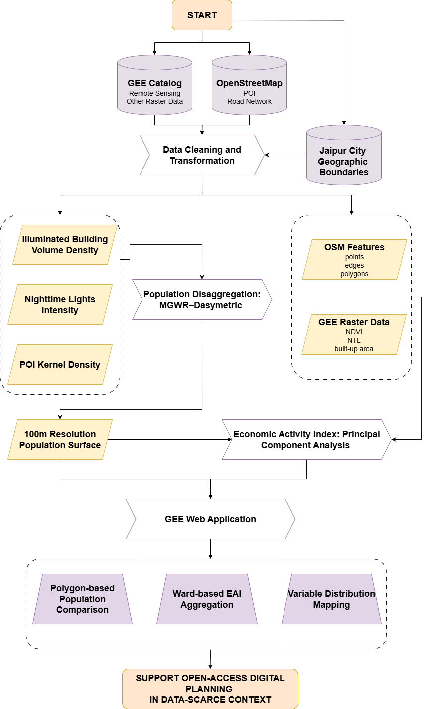
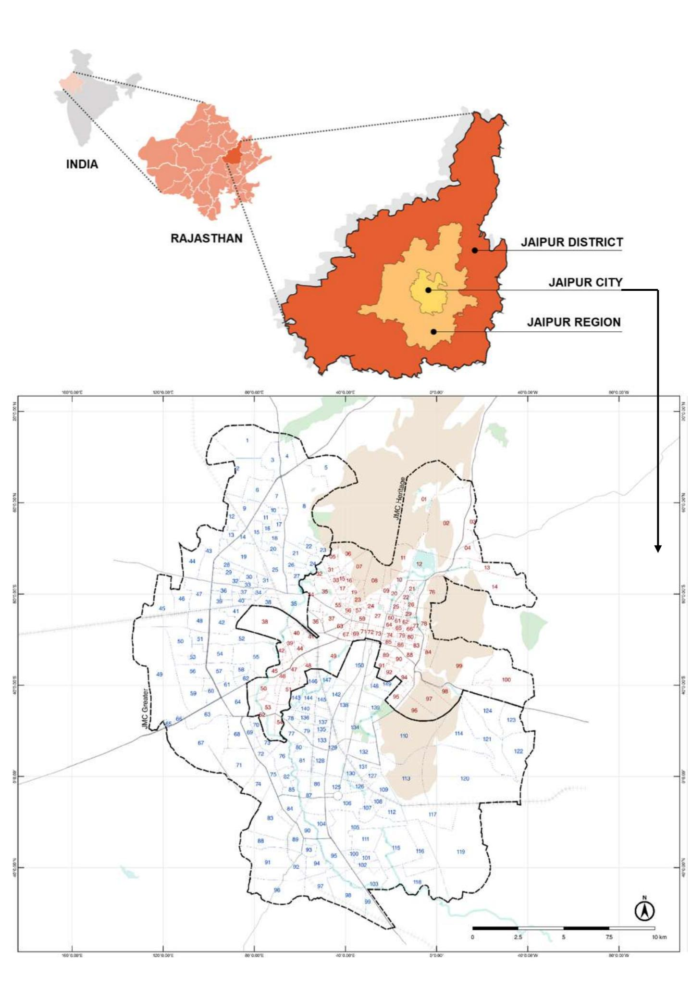
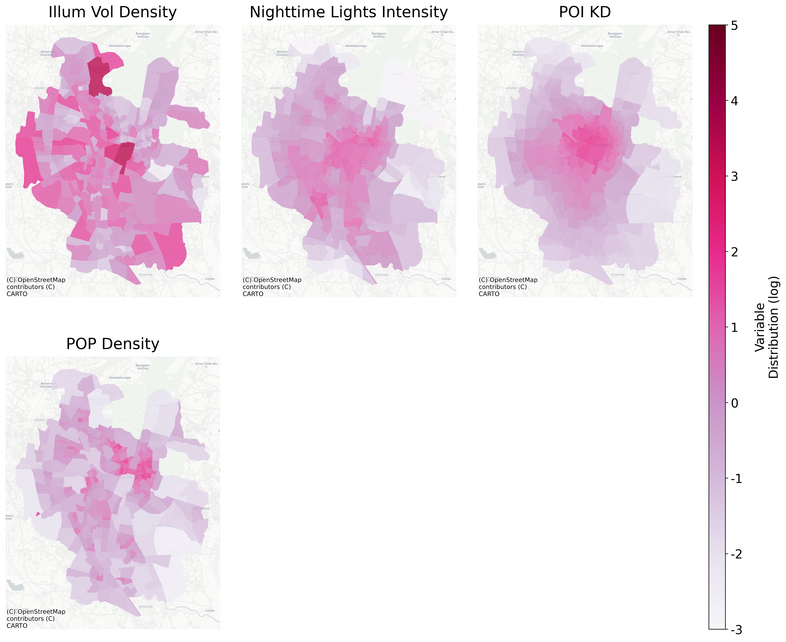
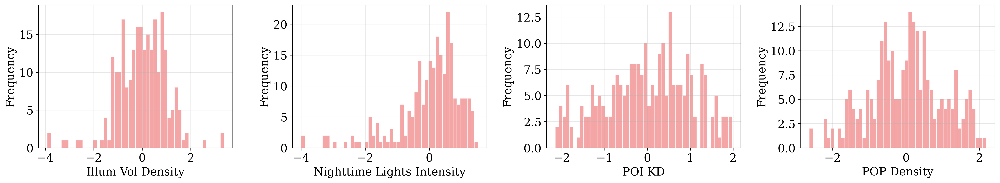
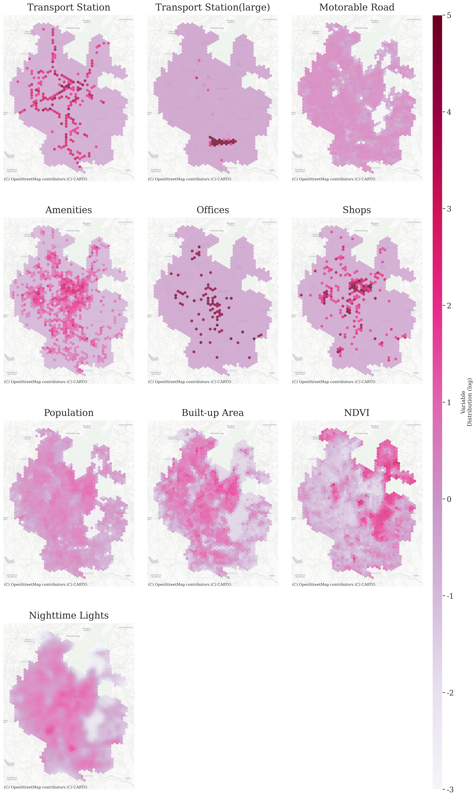
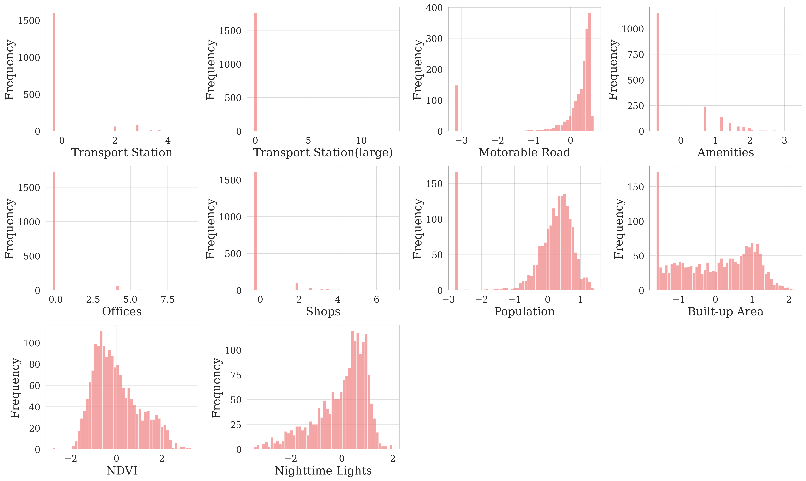

Chapter 3 Methodology
Building on the literature review presented in Chapter 2, this study employs a two-stage analytical framework to estimate urban activities in Jaipur City, utilising remote sensing and open data. First, MGWR is used to model ward-level population patterns based on built environment indicators, with results disaggregated to a 100 m resolution using a Softmax-based allocation. Second, PCA combines population estimates with other spatial indicators to construct an Economic Activity Index (EAI). These outputs are then integrated into a GEE interactive mapping application, enabling users to explore and apply the results in a collaborative digital planning context. Figure 3.1 summarises the whole workflow.

Figure 3.1: Methodology Flowchart
3.1 Study Area
This study focuses on Jaipur City, the political and economic centre of Rajasthan and one of the 100 cities nominated under India’s Smart Cities Mission. While the wider Jaipur Development Authority (JDA) boundary covers a much larger territory, its constituent areas are defined by heterogeneous spatial units—wards in the city, but villages and small towns in the surrounding region; as a result, the combination of this mismatch and the absence of recent high-granularity population data for the non-urban areas makes it difficult to assemble a consistent dataset at the resolution required for this analysis. In contrast, the municipal area offers a uniform ward-based framework, enabling demographic, remote sensing, and open spatial datasets to be integrated on the same spatial level. Moreover, by focusing on this city boundary, the results directly align with ongoing municipal-level digital planning initiatives, where outputs can inform infrastructure monitoring, mobility management, and public service optimisation.
The analysis begins at the ward level, using the 250 wards managed by the Jaipur Municipal Corporation (JMC) as the basic spatial units. According to administrative estimates released by JDA in 2020, these wards collectively host a residential population of 3,053,908. Since the last official Indian census was conducted in 2011, this JDA estimates provide the most recent demographic baseline.
Jaipur’s urban morphology comprises a dense, historic walled city at its core, encircled by peripheral areas that have expanded rapidly along major transport corridors. Together, these patterns combine compact heritage neighbourhoods with low-density, recently urbanised wards, creating a varied setting for analysing spatial heterogeneity in population distribution and economic activity.
The study area is shown in Figure 3.2, where the JMC boundary is highlighted alongside internal ward divisions. This municipal extent therefore defines the spatial scope for all subsequent modelling and analysis steps.

Figure 3.2: Location of Jaipur City. Source: UN-Habitat.
3.2 Data Sources and Preparation
The datasets used in this study were selected and prepared to match the requirements of the two main analytical stages: the MGWR–dasymetric hybrid approach for population disaggregation, and the PCA for constructing the EAI. Most datasets were obtained from open-access platforms, primarily the Google Earth Engine (GEE) Data Catalog and OpenStreetMap (OSM), except for the Jaipur City boundary and ward-level population data, which were provided by the Malaviya National Institute of Technology (MNIT) Jaipur.
3.2.1 Data for MGWR
The dependent variable in the MGWR model is ward-level residential population density, derived from JDA population estimates from 2020. Here, residential population refers to where people live, in contrast to ambient population, which captures where people may be present throughout the day (e.g. workplaces, shopping areas, or transit hubs). Accordingly, all explanatory variables were masked to residential built-up areas, so that predictors reflect residential locations rather than other land uses (Pesaresi et al. 2024). Detailed data sources are provided in Table 3.1.
The selection of explanatory variables followed the four broad categories of ancillary data commonly used in population disaggregation—land cover, nighttime lights, infrastructure, and environmental factors (Qiu et al. 2022). Given that environmental variables such as elevation were excluded, the final set includes only the first three categories, all of which exhibited spatial patterns closely aligned with population distribution, with highest values concentrated in the historic walled city (Figure 3.3 and Figure 3.4):
Illuminated Building Volume Density — Estimated by multiplying the height of each residential built-up pixel from the GHSL settlement dataset by its area, then masking to areas illuminated in VIIRS nighttime lights imagery. In practice, all residential built-up areas in Jaipur were found to be illuminated, making additional filtering unnecessary. Heights were binned into ranges (e.g. <3 m, 3–6 m) and assigned midpoint values (e.g. 1.5 m, 4.5 m). This midpoint approach introduces uncertainty, as the chosen values may not represent the actual height distribution, producing visible abrupt boundaries in the mapped volume variable.
Nighttime Lights Intensity — Derived from VIIRS annual composites, averaged across the study period and log-transformed (log(x + 1)) to reduce skewness.
POI Kernel Density — Calculated from OSM amenities POI that are relevant to residential life rather than including office-based or other employment-related POI which reflect ambient rather than residential population. Eight amenity categories (i.e. education, entertainment, facilities, financial, healthcare, public service, sustenance, and transportation) were tested at ward level, but only sustenance, facilities and healthcare showed meaningful correlations with ward populations, so the others were excluded. The kernel bandwidth was set to 1600m because this value maximised the correlation between POI density and population counts. A detailed correlation matrix is provided in the Appendix.
To improve model stability, both dependent and independent variables were transformed using log(x + 1), standardised to z-scores, and aggregated to the ward level before MGWR fitting. Also, all rasters were aligned to a 100 m grid and a common projection prior to modelling to ensure pixel-level consistency across datasets. Despite these preparations, the MGWR data stage has limitations. The exclusion of environmental factors such as elevation—despite substantial variation across wards—may reduce explanatory power. The use of midpoint values for height estimation can lead to artificial discontinuities in building volume, and the POI kernel density is dependent on the positional accuracy and completeness of OSM data.
| Variable | Description | Details | Sources |
|---|---|---|---|
| illum vol density | Illuminated Building Volume Density: Illuminated building footprint volume per hectare within ward, masked by residential area | Available from band=[‘built characteristics Class Table’] | GHSL: Global settlement characteristics (10 m) 2018 (P2023A) |
| light intensity | Nighttime Lights Intensity: Mean annual DNB radiance within ward, masked by residential area | Available from band=[‘average’] | VIIRS Nighttime Day/Night Annual Band Composites V2.2 (2022-2024) |
| POI KD | POI Kernel Density: Mean POI kernel density within ward, masked by residential area | Available from OSM POI (amenity=*) | OpenStreetMap (2025) |
| POP density | Pop Density: Population density per hectare within ward | Available from col=[‘POP’] | JDA Population Estimates (2020) |

Figure 3.3: MGWR Model Variables Distribution (after log and z-score transformation)

Figure 3.4: MGWR model Variables Distribution Histogram (after log and z-score transformation)
3.2.2 Data for PCA
The PCA stage combines residential population density, derived from the 100 m disaggregated raster produced by the MGWR–dasymetric process (converted to population density in km²), with a set of spatial indicators describing built environment characteristics and accessibility. Together, these indicators can indirectly reflect the presence of economic activity, as many have been used in prior studies to approximate metrics such as employment density (Barzin et al. 2022).While residential density is not a direct measure of economic activity, it reflects demand-side dynamics (where people live and consume), and its limitations are balanced by other indicators that capture supply-side and ambient factors such as workplaces, services, and infrastructure.
All datasets (Table 3.2) were aggregated to a 500 m hexagonal grid (point spacing), transformed using log(x + 1) to reduce skewness, and standardised to z-scores before PCA input. NDVI was excluded from the log transformation because its values are already normalised to a fixed range. From the distribution maps (Figure 3.5 and Figure 3.6), these variables reveal a clear pattern of urban expansion from the walled city towards the west, with the eastern mountains acting as a natural barrier to urban growth.
The PCA indicators come from two main sources:
Vector data from OSM — Points (e.g. amenities), lines (e.g. road networks), and polygons (e.g. large transport stations such as the airport) were converted into density measures—counts, lengths, or areas per square kilometre—within each hexagon. For hexagons intersecting the municipal boundary, only the area inside the boundary was used to compute density, ensuring accurate representation in edge cells.
Raster data from GEE — Datasets such as NDVI and VIIRS NTL were averaged over time before aggregation to the 500 m grid. For sum-based measures (e.g. population, built-up area), values were divided by the actual area of each hexagon within the municipal boundary to avoid underestimation in partially covered cells.
| Variable | Description | Details | Sources |
|---|---|---|---|
| builtup density | Built-up Area: Built-up surface per km² | Available from band=[‘built surface’] | GHSL: Global built-up surface 2020 (P2023A) |
| ntl mean | Nighttime Lights: Mean annual DNB radiance within hexagon | Available from band=[‘average’] | VIIRS Nighttime Day/Night Annual Band Composites V2.2 (2022-2024) |
| pop density km2 | Population: Population surface per km² | Derived from MGWR 100m resolution population counts surface | See data sources of MGWR stage |
| motorable road network | Motorable Road: Length of major road network per km² | Available from OSM road hierarchy (highway=*, e.g. trunk, primary) | OpenStreetMap (2025) |
| amenities poi | Amenities: Count of amenities POI per km² | Available from OSM POI (amenity=*) | OpenStreetMap (2025) |
| shop poi | Shops: Count of shops POI per km² | Available from OSM POI (shop=*) | OpenStreetMap (2025) |
| transport station point | Transport Station: Count of transport nodes (e.g. bus stops) per km² | Available from OSM Transport POI (public transport, railway, amenity, highway, aeroway tags; points and linestrings only) | OpenStreetMap (2025) |
| office poi | Offices: Count of offices POI per km² | Available from OSM POI (office=*) | OpenStreetMap (2025) |
| transport station polygon | Transport Station (large): Area of large transport facilities (e.g. airport) per km² | Available from OSM Transport POI (public transport, railway, amenity, highway, aeroway tags; polygons only) | OpenStreetMap (2025) |
| ndvi mean | NDVI: Mean Daily Normalised Difference Vegetation within hexagon | Available from band=[‘SR B4’, ‘SR B5’] | Landsat 9 Level 2, Collection 2, Tier 1 (2023-2024) |

Figure 3.5: PCA Variables Distribution (after log and z-score transformation)

Figure 3.6: PCA Variables Distribution Histogram (after log and z-score transformation)
3.3 Population Disaggregation: MGWR–Dasymetric Hybrid Approach
In contexts where high-resolution population data are unavailable, combining statistical modelling with dasymetric mapping can improve the spatial accuracy of population estimates (Pajares et al. 2021; Sapena et al. 2022). In Jaipur, the absence of an official census since 2011 and reliance on JDA ward-level estimates from 2020 further necessitate such approaches, as they allow recent population values to be inferred at sufficient spatial granularity. In this study, the Multiscale Geographically Weighted Regression (MGWR) model was used to capture the spatially varying relationships between Jaipur ward-level residential population density and multiple environmental predictors, while the dasymetric mask constrained the disaggregation of population counts only to residential built-up areas.
MGWR extends the traditional GWR framework by allowing not only regression coefficients to vary across space, but also the spatial scale at which each explanatory variable operates. This is achieved by estimating separate bandwidths for each variable, enabling the integration of predictors that influence population patterns over large spatial scales (e.g. regional accessibility) with those operating at finer scales (e.g. building volume density).
Let:
- \(P_w\) = ward-level residential population density
- \(P_g\) = grid-level residential population density
- \(V\) = illuminated building volume density
- \(L\) = VIIRS nighttime light intensity
- \(K\) = POI kernel density
- \(V_g, L_g, K_g\) = corresponding variables at the grid level
- \(w_g\) = adjusted weight for grid \(g\) in ward \(w\)
The ward-level MGWR model is:
\[\begin{equation} \log(P_w + 1) = \beta_0(u,v) + \beta_V(u,v) \, V + \beta_L(u,v) \, L + \beta_K(u,v) \, K + \varepsilon \tag{3.1} \end{equation}\]
The MGWR was implemented in Python using the mgwr package, with ward centroids used to compute inter-ward distances. A Gaussian kernel was employed, and optimal bandwidths for each predictor were determined using the golden section search to minimise the corrected Akaike Information Criterion (AICc). All explanatory variables were masked to residential built-up areas, log-transformed as \(\log(x+1)\), and standardised to z-scores prior to modelling.
Ward-level MGWR coefficients were then applied to grid-level raster layers, producing 100 m resolution predictions:
\[\begin{equation} \widehat{\log(P_g + 1)} = \hat{\beta}_0(u,v) + \hat{\beta}_V(u,v) \, V_g + \hat{\beta}_L(u,v) \, L_g + \hat{\beta}_K(u,v) \, K_g \tag{3.2} \end{equation}\]
These predictions are grid-level log-scale estimates (\(\widehat{\log(P_g+1)}\)). Because coefficients are ward-specific, we treat them as within-ward scores and, within each ward, convert them to disaggregation weights using min–max normalisation and a Softmax-based allocation with a smoothing transform (summing to 1), followed by \(\alpha\)-power shrinkage and 99th-percentile winsorisation. This balances the dominance of peak cells while preserving local contrasts. The code implementing this transformation is provided in the Appendix.
Finally, the ward-level population totals were disaggregated to the 100 m grids according to these adjusted weights:
\[\begin{equation} P_g = \frac{w_g}{\sum_{g \in w} w_g} \times P_w \tag{3.3} \end{equation}\]
The resulting grid-level counts were integerised to ensure exact ward-level totals. The final output is a 100 m resolution residential population raster for Jaipur City.
3.4 Economic Activity Index: Principal Component Analysis Approach
In the second analytical stage, multiple spatial indicators are integrated into a single measure of economic activity using Principal Component Analysis (PCA). PCA is widely applied in composite index construction for its ability to transform correlated inputs into independent components, allowing the main patterns of variation to be summarised while avoiding overweighting information repeated across indicators (Vyas and Kumaranayake 2006; Conlon et al. 2020). In contrast to equal weighting or expert judgement, PCA derives variable weights directly from the data, giving greater influence to indicators that contribute more to the shared variance (Broby and Smyth 2022).
This approach is particularly suitable for this study. The selected spatial indicators—derived from built environment characteristics, accessibility measures, and other spatial variables linked to economic activity—are theoretically connected and empirically correlated based on reviewed literature, suggesting the presence of a common latent dimension. Retaining the first principal component (PC1) provides a data-driven way to capture the overall spatial intensity of economic activities without relying on manually assigned indicator weights.
PCA was applied to the standardised 500 m hexagon-level indicator matrix prepared in Section 3.2.2. PC1 was extracted based on the proportion of variance it explained and the interpretability of its loadings. The Economic Activity Index (EAI) for each hexagon \(i\) was calculated as:
\[\begin{equation} \text{EAI}_i = \frac{\text{PC1}_i - \mu_{\text{PC1}}}{\sigma_{\text{PC1}}} \tag{3.4} \end{equation}\]
where \(\mu_{\text{PC1}}\) and \(\sigma_{\text{PC1}}\) are the mean and standard deviation of the PC1 scores across all hexagons. This standardisation ensures comparability across space. The EAI values were subsequently examined using K-means clustering to identify distinct patterns of economic activity.
While PCA produces statistically optimal combinations of variables, its components are abstract and may not fully preserve the interpretability of the original measures and this trade-off is considered in the Discussion chapter.
3.5 Integration into GEE Web Application
The population surface generated from the MGWR–dasymetric disaggregation and the hexagon-level Economic Activity Index (EAI) derived from the PCA stage were uploaded to the Google Earth Engine (GEE) asset repository. The population layer was provided as a raster, while the EAI was initially uploaded as a vector dataset and subsequently rasterised within GEE to support visualisation and ward-level aggregation. All assets were assigned public read permissions, enabling them to be accessed through their asset IDs.
The interactive application was developed using the GEE JavaScript API, with three main functions:
- Polygon-based Population Comparison – Users can draw two polygons within the study area to aggregate population counts and visualise the results as a histogram.
- Ward-based EAI Aggregation – Users can aggregate the EAI by ward boundaries and view a ranked list of the top 10 wards, displaying official ward numbers and index values.
- Variable Distribution Mapping – Users can view thematic maps showing the spatial distribution of variables contributing to the EAI, using consistent symbology and classification for comparability.
Once the code was completed, the application was published directly from the GEE Code Editor as a shareable web app, allowing stakeholders to access and interact with the outputs without needing specialised GIS software.
3.6 Ethical Considerations
All datasets used in this study are either openly accessible or provided under institutional permission. Their use complies with the relevant licensing terms and collaborative agreements.
Potential privacy risks are mitigated by restricting the analysis to aggregated datasets, reporting population estimates at a 100 m grid resolution, and excluding any personally identifiable information. This resolution is sufficient for identifying broad spatial patterns while preventing the recognition of individual households or persons.
Nevertheless, the use of volunteered geographic information (VGI)—specifically OSM—introduces potential biases due to uneven contributor coverage, positional inaccuracies, and varying temporal completeness. Such biases may affect the representativeness of the input indicators, which in turn could influence the population surface and the Economic Activity Index (EAI). Furthermore, making the outputs publicly available through a GEE application may result in areas with high population density or elevated EAI receiving disproportionate attention from policymakers, businesses, or other stakeholders. While increased visibility can support digital planning, it may also risk reinforcing spatial inequalities if interpreted without adequate socio-economic context.
To address these concerns, this study documents all data sources, methodological choices, and limitations in detail, and reflects on these issues in the Discussion chapter. This transparency is intended to encourage responsible and context-aware use of the outputs in public planning and policy-making processes, while also filling critical data gaps in a data-scarce context and supporting planners with open-data-based, computational insights for more sustainable and inclusive urban development.